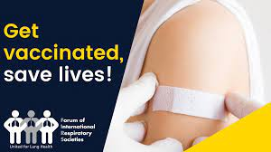
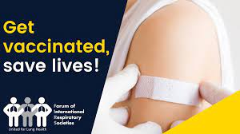

- DRDO's Anti-covid Drug 2-DG
- fake Remdesivir injection
- Remdesivir-Black_marketing
- Remdesivir-substitute
- Vaccination in India
- social_awareness
- FAQ about vaccines
India currently has two Covid-19 vaccines being manufactured locally: Covishield and
Covaxin, and we can expect five more vaccines by Q3 2021. These vaccines are Sputnik V
vaccine (in collaboration with Dr. Reddy's), Johnson & Johnson vaccine (in collaboration with
Biological E), Novavax vaccine (in collaboration with Serum India), Zydus Cadila's vaccine,
and Bharat Biotech's Intranasal Vaccine.
YOU can prefer HERE for more details.
YOU can prefer HERE for more details.

 
